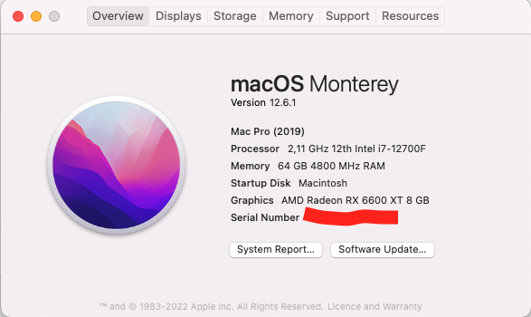
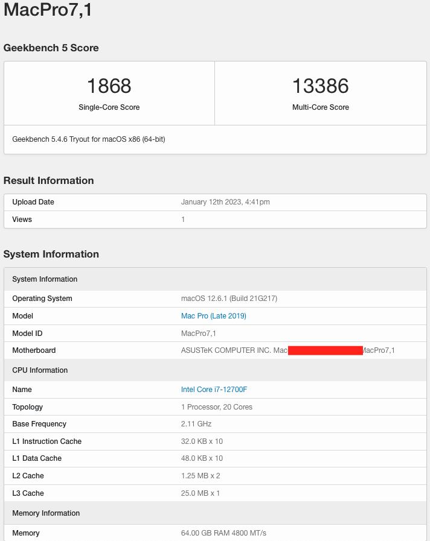
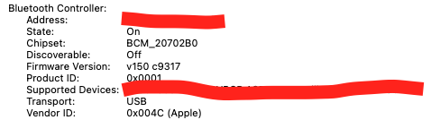

Hacktosh Monterey 12.6.1 Installation
What is hackintosh
Hackintosh is the corresponding word to macintosh, which is the operation system developed by Apple officially. On the contrary, hackintosh is installing the macOS system on the mobile/desktop products not from Apple. You can call it fake macOS.
Why hackintosh
Thinking about the upsides of the macOS and the expensiveness of Apple mobile/desktop products, hackintosh becomes popular in these days. Especially, the software OpenCore makes the installation of hackintosh much easier than before.
For the people installing hackintosh on their PCs, it makes the hardware upgrading smooth and repairing easy.
I was dissatisfied with Apple mobile products’ quality. I have 4 MacBook Pro in use now, MacBook Pro 15 (2013 late), MacBook Pro 15 (2016), MacBook Pro 13 (2018) and MacBook Pro 16 (2019). Beside the MacBook Pro 15 (2013 late), all the other laptops have broken hardware issues except battery :
- MacBook Pro 15 (2016): broken backlight cable, broken key c in the butterfly keyboard.
- MacBook Pro 13 (2018) and MacBook Pro 16 (2019): screen turns to completely black, when opening the screen more than 120 degree.
The broken backlight cable is the common issue with the MacBook from 2016 to 2018. However, Apple only provides free repairing for the MacBook Pro 13, not the MacBook Pro 15. Apple does provide a free repairing for the keyboard, but only for the products purchased in 4 years. Mine was broken at its 5th year. I contacted Apple customer hotline, they said I had to pay 1000 EUR to repair it. I was furious about their attitude and decided to not buy any Apple mobile/desktop products in the future. Since I have been using macOS in the last 10 years, I decided to install hackintosh on my newly built PC.
Hardware specs
Hackintosh has a list of compatible hardware, Please check the section Hardware Limitations from OpenCore Install Guide for more information. Generally speaking, Intel CPU + AMD GPU + Broadcom Wifi/BT card is the best option for installing hackintosh, and it’s also the easiest one.
Here is the hardware from my PC
| Hardware | Brand |
|---|---|
| MotherBoard | Asus B660i |
| CPU | Intel 12700F |
| GPU | Sapphire Nitro+ Radeon RX 6600 XT |
| RAM | Corsair Vengeance schwarz DIMM Kit 64GB |
| SSD | Western Digital WD_BLACK SN850 NVMe SSD 1TB * 2 |
| WIFI/Bluetooth Card | Broadcom BCM94360Z3 |
| PSU | Corsair SF750 |
Version
- macOS Monterey 12.6.1
- OpenCore: 0.8.6 (RELEASE)
What works
- macOS Monterey
- Shutdown
- Reboot
- Sleep
- HDMI/DP
- Ethernet
- Wifi/BT
- USB Ports
- Audio
- AirDrop/Handoff/Unlock with Apple Watch… (All Continuity features except Sidecar)
- DRM
What doesn’t work
None
Preparation before installation
A USB stick with more or equal than 16 GB space and a computer with operation system installed to make the USB installer.
Creating the USB installer
Please check the section Creating the USB from OpenCore Install Guide
OpenCore configuration
I’m using OpenCore 0.8.6, if you want to use the EFI provided by me, please make sure you’re using the same version of OpenCore. Different versions of OpenCore may cause differences in the output config.plist file, which could lead to errors during installation or even unable to boot.
For the rest, please follow the section Setting up OpenCore’s EFI environment from OpenCore Install Guide to mount the EFI drive from USB, then use the folders Boot and OC from the EFI I provided to replace the ones from the mounted EFI drive from USB.
BIOS Setup
- Advanced > CPU Configuration > Intel (VMX) Virtualization Technology > Enabled (defalut)
- Advanced > CPU Configuration > Active Performance Cores > All (i5 12400f have no E-Cores, unknown)
- Advanced > CPU Configuration > Hyper-Threading > Enabled (defalut)
- Advanced > System Agent (SA) Configuration > VT-d > Enabled (defalut)
- Advanced > System Agent (SA) Configuration > Control Iommu Pre-boot Behavior > Disable IOMMU (default? not sure)
- Advanced > PCI Subsystem Settings > Above 4G Decording > Enabled (defalut)
- Advanced > PCI Subsystem Settings > Re-Size BAR Support > Enabled (defalut)
- Advanced > USB Configuration > Legacy USB Support > Enabled
- Advanced > USB Configuration > XHCI Hand-off > Enabled
- Advanced > Network Stack Configuration > Network Stack > Disabled
- Advanced > USB Configuration > Legacy USB Support > Enabled
- Boot > CSM (Compatibility Support Module) > Launch CSM > Disabled
- Boot > Secure Boot > OS Type > Other OS
- Boot > Secure Boot Mode > Custom
- Boot > Boot Configuration > Fast Boot > Disabled
Installation
Please check the section Installation process and section Post Install from OpenCore Install Guide to install Monterey.
Screenshots
  
Dual Boot with Windows 11
- Download the Windows 11 iso from windows official website
- Make the USB installation drive.
-
Install Windows 11
- By default, Windows system cannot use the Broadcom WIFI/Bluetooth card. Therefore, at the stage connect to internet you cannot find any wifi, if you don’t connect your PC with a LAN cable.
- However, there is no button for skip this step by default. You can solve this issue by pressing Shift + F10 to open the terminal and inputting
OOBE\BYPASSNROto skip this step.
- When you finish the installation, download the file win_10_64_bcm_driver.zip, and install the drivers for bluetooth and wifi individually.
Download
- GitHub - zhiwei2017/Hackintosh-Asus-B660i-12700F-Sapphire-6600xt: Hackintosh in Monterey with OC 0.8.6
- OpenCore Configurator 2.63.1.0